| ID | Severity | Where | What happened | What I expected | Suggested fix | Effort | Evidence | Basis |
|---|---|---|---|---|---|---|---|---|
| CLOSE-01 | slows me down | /en/close-day, Manager and Front Desk, 10-day backlog | Heading says "Thursday, October 1, 2026 is ready to close" and a badge says "10 days waiting". Only Oct 1 can be closed. The automatic close stopped after Sep 30 because 102 is still in house. The same Guest stays open on every later day, so each of the ten closes asks for a reason, and the dialog is re-keyed per day so a reason is not carried over. | To see the range (Oct 1 to Oct 10), which days have blockers, and clear them once. | Show the range and the per-day open counts. When the same item is open on several days, offer one close of all of them with one reason. At minimum, say "the same Guest holds all 10 days". | M | 01-manager-desktop.png; reproduced Y |
verified for the 10-day count and the single
offered day; inferred that ten reasons will
be needed (edge-cases CD-S1-07, CD-S1-22;
key={day.dayToClose} in close-day-view.tsx). I did not
close any day.
|
| CLOSE-02 | causes errors | /en/close-day, Manager and Front Desk, overdue departure | On the overdue row "ahmed, 102, Due out Oct 1, 2026" the filled primary button is Extend; Open departures is the quiet one. The Extend dialog says "A Guest's extra nights are charged at the booking's own price", but the Room nights card on the same page says this booking has "No price on the booking". Extending to clear the blocker would also record a Guest as in house who may have left ten days ago. | For a Guest ten days overdue, Check out as the main action; Extend only when the Guest is really staying, with a warning when the booking has no price. | Make Open departures primary on overdue rows, show "10 days overdue", and add the no-price warning to the Extend dialog. | S | 01-manager-desktop.png, 06-extend-dialog.png; reproduced Y | verified (dialog opened, not saved). |
| CLOSE-03 | slows me down | Confirm dialog, Manager, items open | The dialog says "1 item is still open. It is recorded with the close, with your reason." It does not say which item. The sentence about what the close charges ("charges the night of every Guest whose booking has a price") exists only in the no-items variant, so with items open the one consequence that touches money is not stated. It does say reopening is not available yet. | Name the open items, and always say what will be charged and what will not (here: 0 nights charged, 1 not charged, and who). | List the open items by name in the dialog. Show the room-night line in both variants. | S | 02-confirm-dialog.png; reproduced Y |
verified for the open-items variant;
inferred for the no-items variant (dialogQuiet
text in messages.ts at HEAD).
|
| CLOSE-04 | slows me down | /en/close-day, departures step | The row says "102 · Due out Oct 1, 2026". It does not say how late (10 days) and, unlike the arrivals rows, shows no reservation reference. After Open departures and a check-out, the page's Back button goes one level up (Today), not back to Close the day, so the next blocker means going through the rail. | "10 days overdue", the reference, and a way back to the close. | Add days overdue and the reference to the row. Return to Close the day after a check-out started from it. | S | 01-manager-desktop.png, 07-open-departures-landing.png | verified for the missing age and reference, and that Back on Close the day points to Today; inferred that Back on Departures does the same (ADR 0035). |
| CLOSE-05 | causes errors | /en/close-day, room nights step, Manager | "No price on the booking · 1: ahmed · 102" is listed, with no link to the booking or to anywhere a price can be set. Recent closes already show "1 not charged" on Sep 29 and Sep 30 and will show it for each of the ten days waiting. The copy says such a night "never holds the close up", which is a design choice, but the page gives no way to fix it before the closes happen. | A link from each uncharged Guest to the booking, before I close ten days of unbilled nights. | Link each row to the reservation. Say what happens to a night that was closed without a price. | S | 01-manager-desktop.png | verified for the listing, the missing link and the two earlier "not charged" days; unknown whether a closed, uncharged night can later be charged (I did not find it in the docs). |
| CLOSE-06 | slows me down | /en/today, Manager | Today's "Needs attention" shows 2 cards (room not ready, overdue departure). The 10 unclosed days, the thing the night auditor owns, appear nowhere on Today. Numbers that both pages share do agree: Today says "1 overdue", "was due to leave on Oct 1", room 102, Guest ahmed; Close the day says the same. | An attention card on Today saying "10 days waiting to be closed" linking to Close the day. | Add the card when days are waiting. | S | 04-today-for-comparison.png | verified |
| CLOSE-07 | slows me down | /en/close-day, all roles | "The day ended at 04:00" gives no time zone and no clock. Today shows 15:07 Europe/Istanbul; Close the day never says what "now" is, which date is the Property's current business date (Oct 11) or that Oct 1 is ten days ago. Dates are always spelled out ("Thursday, October 1, 2026"), never relative. | "Oct 1 (10 days ago) · Property time, Europe/Istanbul". | State the zone and the current business date in the first card. | S | 01-manager-desktop.png, 04-today-for-comparison.png | verified |
| CLOSE-08 | slows me down | /en/close-day, wording | The page never says plainly which things hard-block a close. The due-day text says "Clear what is still open, or close it with a reason" (soft). The not-yet-due text (code) says "Anything still open below will hold the close up" (hard). Room nights "never hold the close up"; folios are "Does not hold up the close". A tired reader cannot tell what must be cleared from what only needs a reason. | One rule, stated once: open items need a reason, nothing else matters. | Replace "hold the close up" in the not-yet-due text; add one sentence in the first card. | S | 01-manager-desktop.png (due text) |
verified for the due text;
inferred for the not-yet-due text
(preparingDescription).
|
| CLOSE-09 | polish | Finance | Finance sees the whole checklist, no Close button, and "You can see this day, but closing it needs the Close the day permission." It does not say who holds that permission. The departures step still shows Open departures to Finance, but that screen has an empty Action column with no explanation. | "Ask an owner, manager or front desk" and no link that leads to a dead end. | Name the roles; hide Open departures when the viewer cannot check out. | S | 10-finance.png; reproduced Y | verified. Front Desk can close and extend; that matches CD-S1-29 and is not a defect (11-frontdesk.png). |
| CLOSE-10 | polish | 375 px and 768 px, Manager | No page-level horizontal scroll. At 375 px the Recently closed table is 750 px wide in a 343 px box, so Room nights, Left open and Folios open sit off-screen with no cue. At 768 px the breadcrumb is cut to "W… F…". Buttons are 32 to 36 px high. | A visible scroll cue or stacked rows; a back arrow plus the page name. | Stack rows below 640 px; allow 44 px targets for Close and Extend. | M | 05-manager-375.png, 12-manager-768.png | verified |
| CLOSE-11 | polish | /ar/close-day | The layout mirrors correctly. Wording is rough: the column "Closed by" reads "أغلقه" ("close it"/"he closed it"), and the sentence "عالج ما زال مفتوحًا" is awkward. On the rail (not this page) Housekeeping reads "خدمة الغرف", which means room service. Turkish read cleanly. | "أُغلق بواسطة" and a smoother sentence. | Have an Arabic speaker review the closeDay block. | S | 09-arabic.png, 08-turkish.png | inferred (my reading of Arabic; not reviewed by a native speaker) |
| CLOSE-12 | causes errors | /en/close-day, about 01:00, a Guest still arriving | I could not reproduce it (no pending arrivals tonight and the clock was 15:07). By the docs, before the cutoff the screen prepares the current day and lists its open items; a Guest booked for tonight but not yet arrived is listed as "Arrivals not checked in", with Open arrivals, and No-show and Cancel in a row menu. Nothing on the row says the arrival is not yet late. | Distinguish "not due yet" from "late", so nobody marks a Guest en route as a no-show at 01:00. | On a day that cannot close yet, label arrivals "expected" and keep No-show out of reach. | M | none | inferred (CD-S1-03, CD-S1-44, close-day-view.tsx); unknown whether the database refuses an early no-show. |
| Job | Pass test (written first) | Result | Seconds | Clicks |
|---|---|---|---|---|
| 1. Find what blocks tonight's close | Within 10 s I can name every open item and which are hard blockers. | Partial. Item named in 5 s; hard versus soft is unclear (CLOSE-08). | ~5 | 0 |
| 2. Get to the place where the blocker is cleared | Check out for that Guest in 2 clicks or fewer. | Pass. Open departures opens a filtered "Due and overdue" list with the one Guest and a Check out button. Stopped before checking out, not persisted. | ~10 | 1 |
| 3. Know what closing will do before the click | Dialog names the date, the items and the money effect, and says whether it can be undone. | Partial. Date and finality yes; items and charges no (CLOSE-03). Stopped at the confirm step, not persisted. | ~10 | 1 |
| 4. Close with an item open (error path) | Empty reason is refused with a clear message. | Pass. The browser's own "Please fill out this field" stops it and the dialog stays open. Message follows the browser language, not the app's. Valid submit not attempted. | ~10 | 2 |
| 5. Work through a backlog | See the range and clear it with a bulk action. | Fail. Oldest day only, no range, no bulk (CLOSE-01). Not attempted past the confirm step. | n/a | n/a |
| 6. Under pressure at 01:00 with a late arrival | The screen tells a late Guest from one still expected. | Not reproducible on staging; judged from code (CLOSE-12). | n/a | n/a |
| 7. Other roles | Finance cannot close and is told why; Front Desk can. | Pass with polish (CLOSE-09). | ~60 (incl. sign-in) | ~6 each |
| 8. Locale, RTL, narrow, keyboard | TR and AR render with no raw keys; 375 and 768 have no page scroll; dialog is keyboard-safe. | Pass. Reason field takes focus on open, Escape closes, focus returns to the Close button (all three checked). Polish in CLOSE-10 and CLOSE-11. | ~120 | n/a |
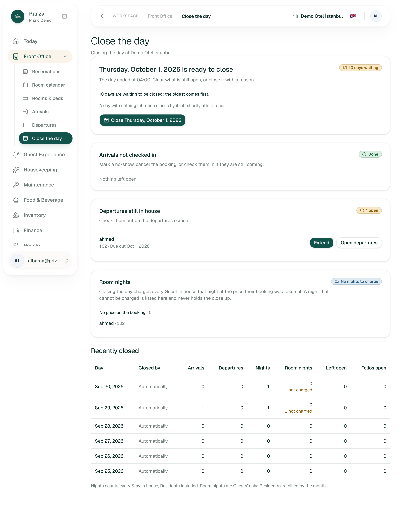
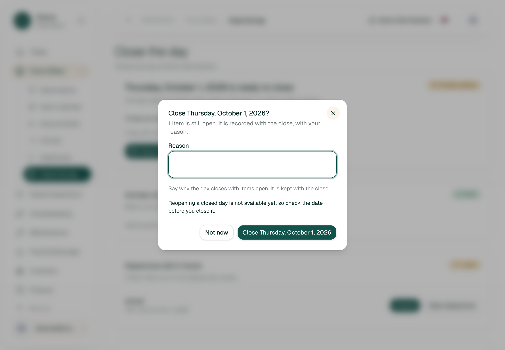
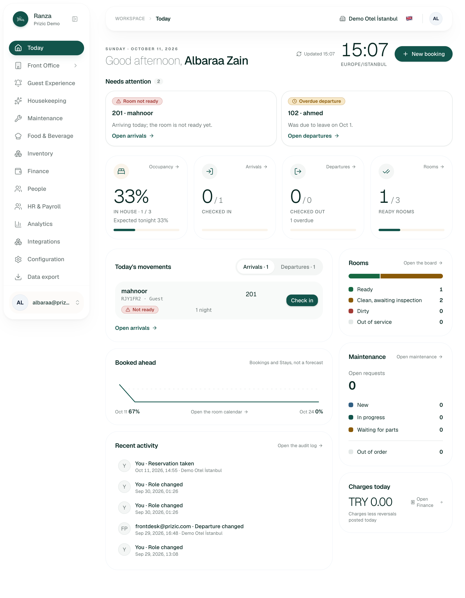
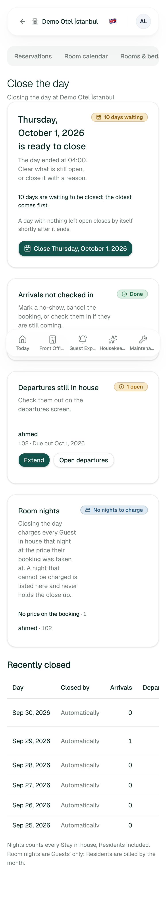
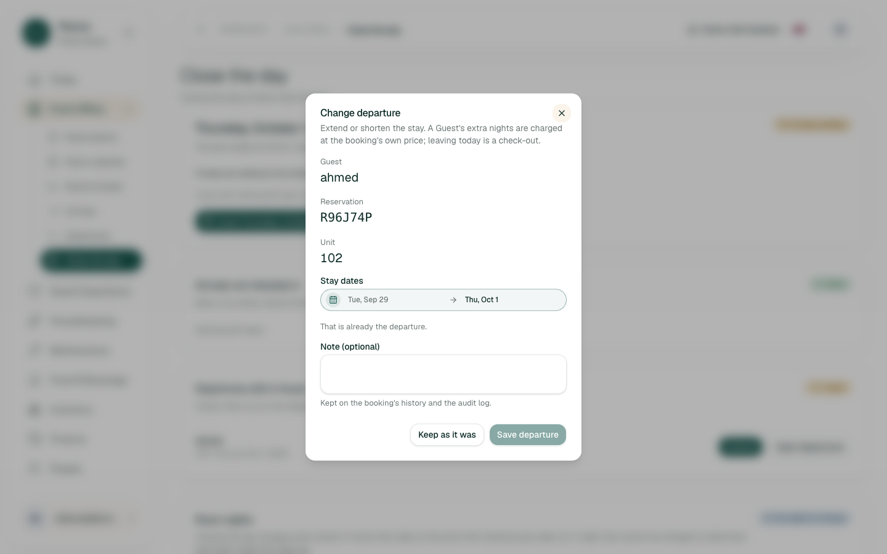
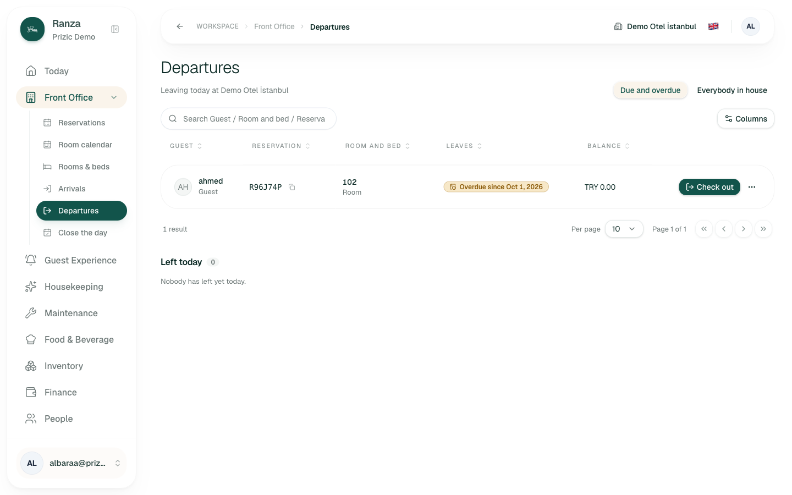
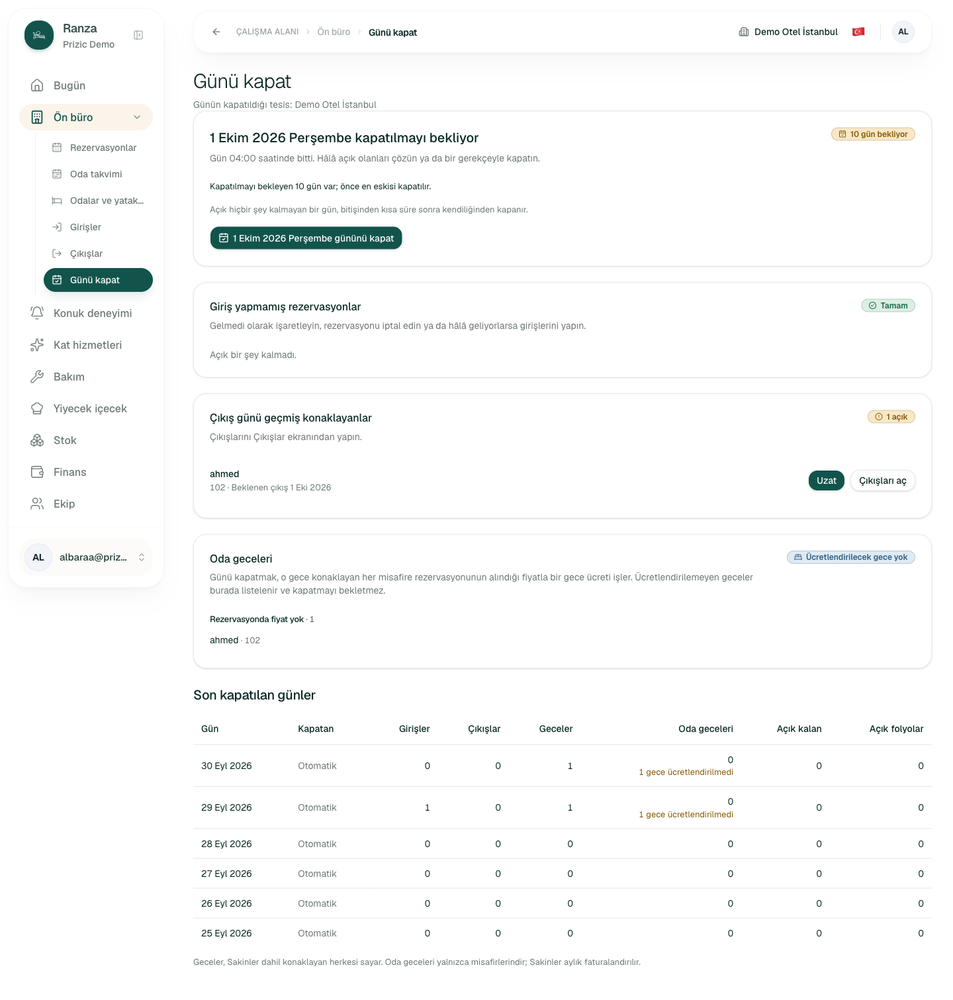
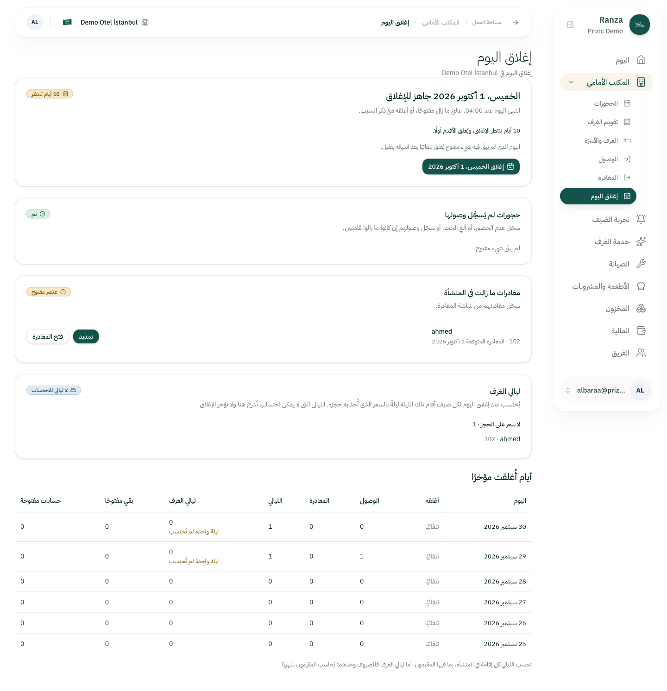
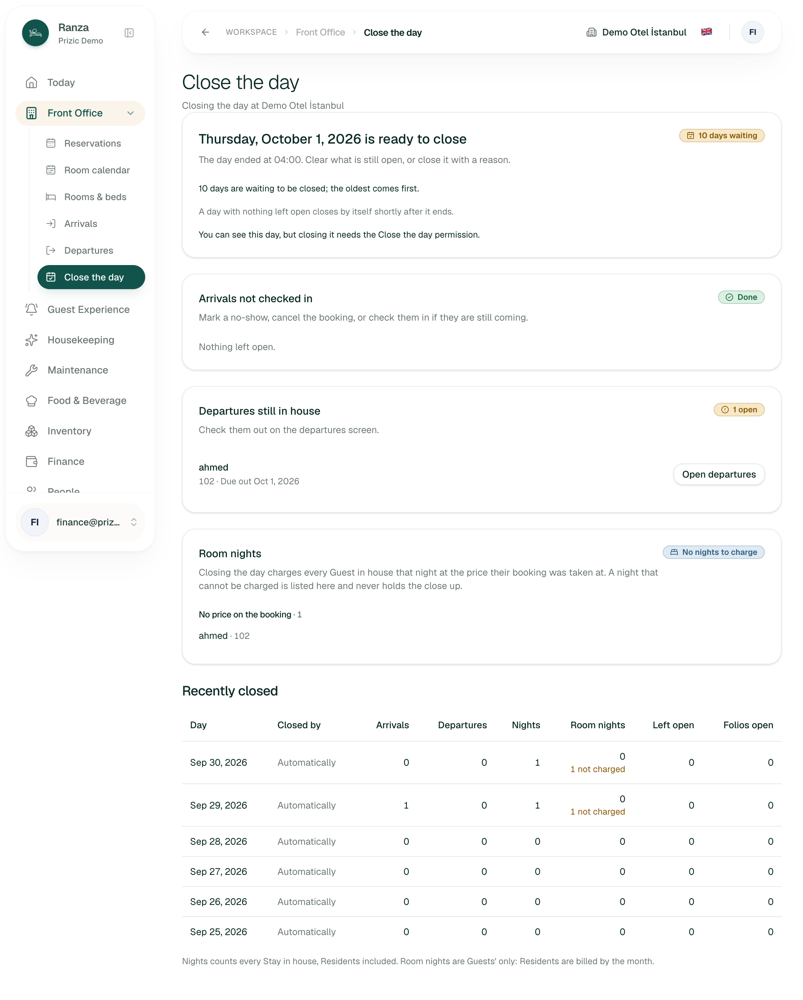
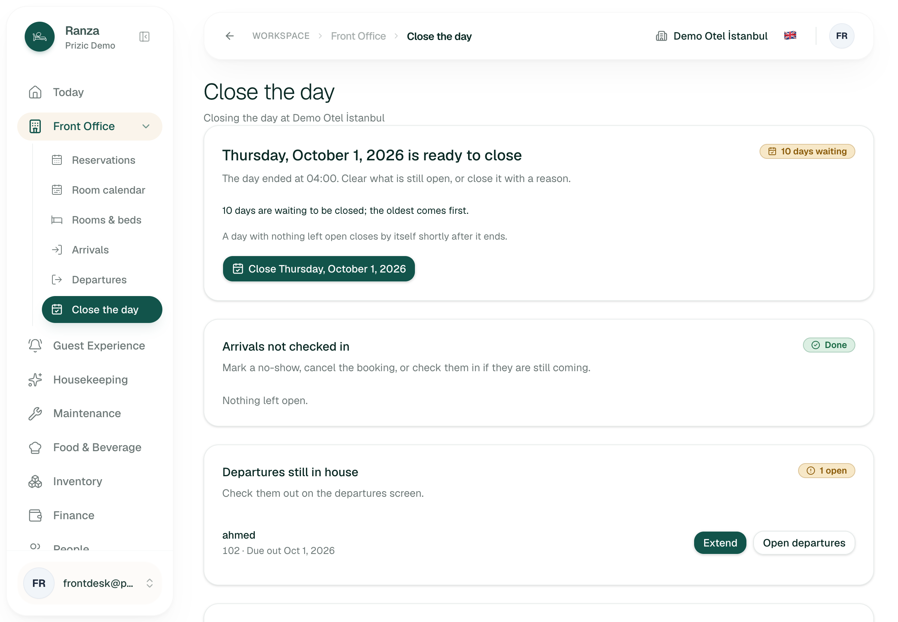
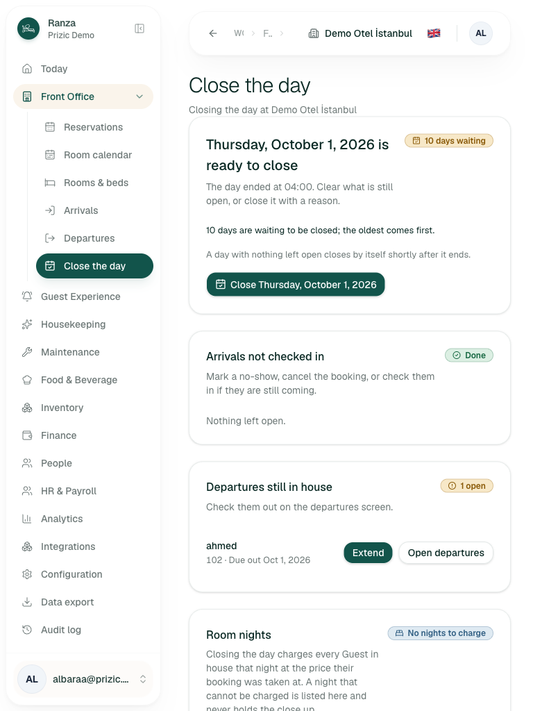